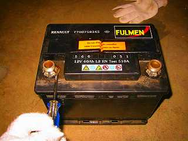
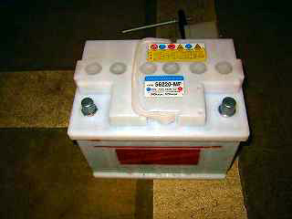
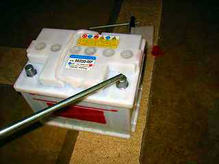
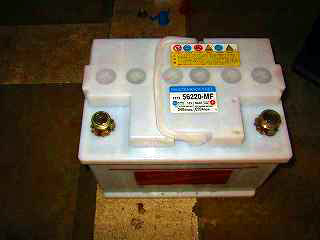
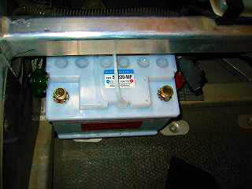
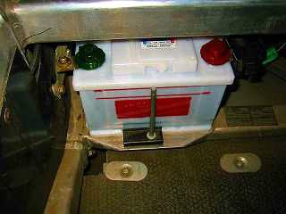

とうとうバッテリーが死んでしまいました。以前より、スタータを回すと時計がリセットしてしまっていたのですが、"カッ"といって回りません。充電をしてもだめみたいなので交換しました。ほぼ5年持ったことになります。

純正のバッテリー。RENAULT 7700758345 FULMEN BATTERIES 560-051 12V60AhL2 EN Test510Aと書いてありました。端子にアダプターがついているので外して再利用します。グリスがたっぷり塗ってあるのでマイナスドライバでこじるだけですんなり外れました。取れにくい場合はドライヤーで暖めると外れやすいそうです。新しいバッテリー。12000円にて購入。


先ず両方の端子にグリスを塗ります。
両方の端子にまんべん無くグリスを塗ったら、先ほど取り外したアダプターを押し込みます。結構力が要りました。割らないように注意しましょう。
バッテリーをシャーシに納めます。


バッテリーをしっかり固定して、端子を必ず(＋)側からねじ込んで、最後に(－)側を止めます。
理由は、(手締めのときは関係ないですが)、(－)を接続した後に(＋)側を締付けると、スパナ等がシャーシにあたった時にショートする可能性があるためです。
March 29 '03 K.Kishimoto